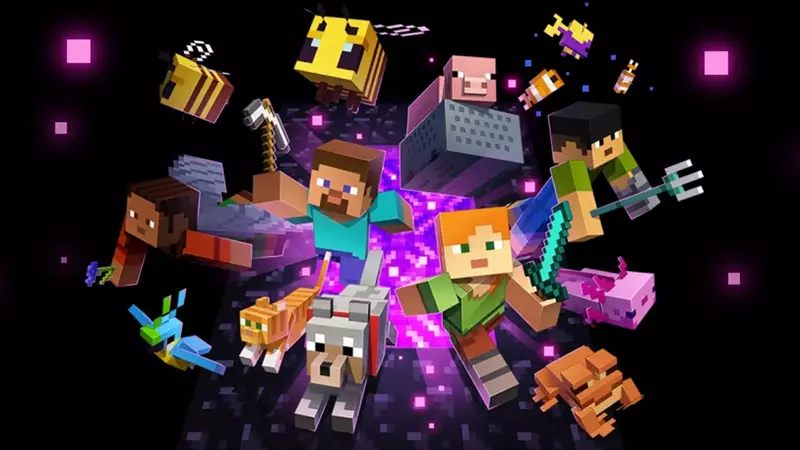

Minecraft e um jogo eletronico sandbox de sobrevivencia criado pelo desenvolvedor sueco Markus "Notch" Persson e posteriormente desenvolvido e publicado pela Mojang Studios,cuja propriedade intelectual foi obtida pela Microsoft em 2014.
Lançado inicialmente em maio de 2009 como um projeto em desenvolvimento, seu lançamento completo ocorreu em novembro de 2011 para Microsoft Windows, macOS, Linux e alguns dispositivos móveis, sendo posteriormente relançado para uma ampla variedade de plataformas.
Minecraft é um jogo eletrônico dos gêneros sandbox e sobrevivência que não possui objetivos específicos a serem alcançados, permitindo aos jogadores uma grande liberdade de escolha de como jogá-lo. No entanto, existe um sistema de conquistas, conhecido como "progressos" na edição Java.
A jogabilidade é apresentada numa perspectiva em primeira pessoa por padrão, mas os jogadores têm a opção de selecionarem uma visão em terceira pessoa. O mundo aberto de Minecraft é composto de objetos tridimensionais brutos — principalmente cubos e fluidos, sendo comumente chamados de "blocos" — representando vários materiais, como pedra, minérios, troncos de árvores, água e lava.
A jogabilidade principal gira em torno de pegar e colocar esses objetos, que são organizados em uma grade tridimensional, enquanto os jogadores podem se mover livremente pelo mundo. Os jogadores podem "extrair" blocos e depois colocá-los em outro lugar, permitindo que eles construam coisas distintas.
Existe uma grande variedade de conteúdo para download criado pelo usuário para Minecraft, como modificações, pacotes de texturas e mapas personalizados. Modificações no código de Minecraft, adicionam uma variedade de mudanças na jogabilidade, variando de novos blocos, novos itens, novos mobs a conjuntos inteiros de mecanismos para criar.
A comunidade de modders é responsável por um suprimento substancial de modificações, desde aqueles que aprimoram a jogabilidade, como minimapas, waypoints e contadores de durabilidade, até aqueles que adicionam elementos de outros jogos e mídias.
Minecraft é um jogo bom, divertido, e da para jogar com os amigos, variadades de conteúdo, e com modificações sendo comuns o conteúdo e infinito praticamente e tem versões para todos os dispositivos. Minha nota e 9.5 de 10, recomendo jogar o jogo(ainda mais se você tiver amigos).
